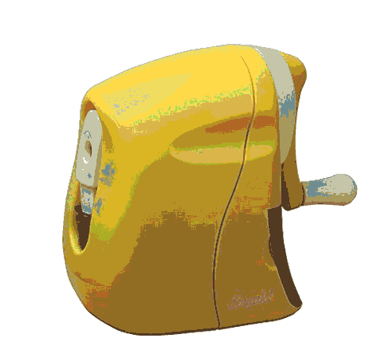
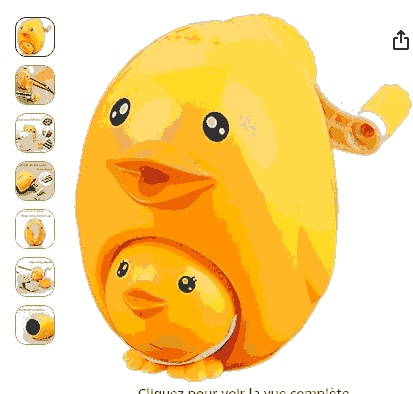
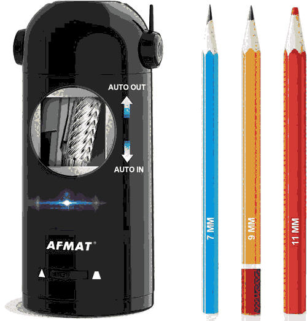
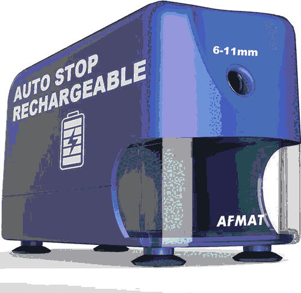

Pencil Sharpeners
notes / drawing / tools
A proper sharpener matters more than you'd expect. The difference between
a bad point and a good one shows up in the line. Collecting notes on what
seems worth getting.
Models to look at
Dahle 133
German helical blade. Supposed to be very good. The benchmark.
Sonic Ribigaku Karu — half manual

Japanese. Half-manual means you crank to sharpen but the mechanism
handles the rotation. Compact. Interesting concept.
-
office-japan.jp
office-japan.jp
office-japan.jp/…/sonic-ribigaku-karu-half-manual…lv-8070-y
-
Sonic 802 Guide
amazon.fr
amazon.fr/…/B00651989M
Taille-crayon manivelle — motif maman canard

Crank sharpener shaped like a mother duck with a duckling. Manual, satisfying to use presumably.
Found on Amazon FR.
Some electric options (AFMAT)


Links & sources